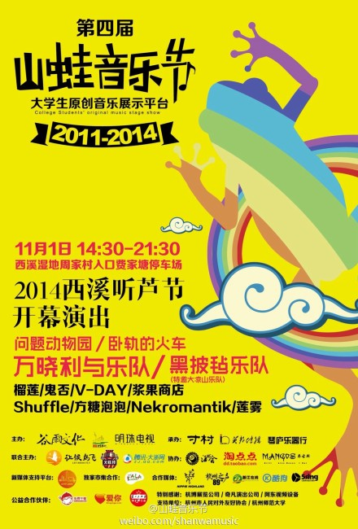

由谷雨文化主办的大学生原创音乐展示平台——山蛙音乐节今年举办到了第四届，经6月份开始至10月，四场乐队选拔预演的室内场，从50余个乐队/个人组合中有8组原创乐队脱颖而出；将于11月1日在西湿国家湿地公园内与包括万晓利在内的4支嘉宾乐队上演户外音乐盛宴。
因为梦想因为音乐，走到一起的团队
“这个音乐节为什么叫山蛙呢？”
山是因为在杭州小和山发起的，蛙是能唱能跳，来源于自然的本能，代表原创。同时山蛙是英文“show us”的音译，意思是“秀我们”。山蛙的发起人小葛是一家琴行的老板，他说当时浙江除了西湖音乐节，几乎看不到别的原创音乐表演，而西湖音乐节上杭州本土的音乐人几乎没有，于是便自己出资让几个小和山高校内的原创乐队演了一场小型的音乐节，结果反响相当热烈。第二年，小葛认识了策划人路路，两人一拍即合，打算扩大演出规模，于是路路找到了英邦的Cgold、琴庐的山爷以及寸村的红老六，于是便有了谷雨文化，一个“赔钱”的公司。路路说，我们几个都是音乐爱好者，当年玩音乐的时候没有音乐节舞台给我们展示，现在有条件了，就想着做一个舞台、一个平台，给热爱原创音乐的高校乐队们。
山蛙音乐节与其他音乐节的区别在于它的定位：山蛙是大学生自己的舞台，是任何人都有机会上去表演的一个舞台；其次，它是原创性的时代性的，代表了当今大学生群体、这个思想界的先锋队的精神状态和音乐诉求；第三，山蛙是公益的，所有演出不售门票，所有演职人员不取报酬。“山蛙永远公益，永远不售票。”这是谷雨团队常提到的原则。
有了团队和策划，2012年的山蛙取得了突破，共演出了4场，有来自杭嘉湖地区的58支乐队报名，34支乐队参演，其中演出地点有Live House、高校礼堂、户外体育场，范围辐射杭州城西、下沙、小和山高教园区，现场共有超过2000人次观看了演出。为后来的山蛙运营模式奠定了框架。
公益联手，山蛙每年都在进步
2013年的山蛙得到了湖滨银泰、西溪湿地的大力支持。同时与邓飞发起的公益组织“让候鸟飞”牵手，在大学生中掀起了关注自然的公益热潮；来自南京、上海、温州、杭州本土等地高校的20多首原创环保歌曲应运而生。并在2013年11月2日的西溪湿地中唱响。
今年的12月，经过一整年的精心录制和准备，《徙·憩——让候鸟飞》公益CD将正式面世，11月1日的山蛙音乐节上，邓飞先生将出席并参与这张CD的发布仪式，同时亮相的还有谷雨文化出品的西溪湿地主题歌曲作品。当然不家选拔出的8支来自江浙沪地区的高校乐队，他们的音乐风格涵盖流行、funk、朋克、摇滚等多种多样，总体水平较前几届参加的乐队有长足的进步。
“今年来参演的乐队水平质量比往年高了不少，”作为山蛙音乐节海选特邀嘉宾的洛兵老师说，“三年来山蛙音乐节给杭州及周边高校乐队带来的激励起了作用，很多当年大一大二的学生看了音乐节后便投身于音乐创作，也有不少本来闭门造车的原创乐队也得到了交流，作品更加丰满成熟。”山蛙音乐节策划人路路说：“排练房排练跟大舞台演出是完全不同的，有好几支乐队通过我们这个舞台的演出积累了经验，去了迷笛、草莓这些一线音乐节，我们觉得很开心。这就是山蛙要做的事，我们甘心作一块跳板，这是我们的价值。”
2014山蛙音乐节
时间：11月1日 下午14:30-21:30 PM
地点：西溪国家湿地公园周家村入口费家塘停车场
领票方式：关注“中国原创音乐节地”官方微博，转发相关微博，便有机会获得音乐节门票（门票数量有上限，送完为止），活动当天凭微博私信在入口处“领票点”领取。